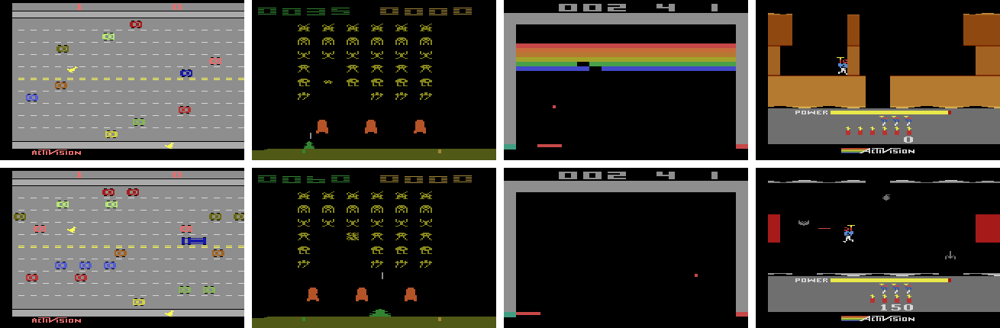

The Arcade Learning Environment (ALE)

The Arcade Learning Environment (ALE) is a framework that allows researchers and hobbyists to develop AI agents for Atari 2600 games. It is built on top of the Atari 2600 emulator Stella and separates the details of emulation from agent design.
For an overview of our goals for the ALE read The Arcade Learning Environment: An Evaluation Platform for General Agents. If you use ALE in your research, we ask that you please cite this paper in reference to the environment.
Installation
Python Interface
The Python interface ale-py supports the follow 64 bit systems running Python 3.5 or newer:
- Windows 7+
- macOS 10.9+
- Linux Distros supporting manylinux2010
To install the Python interface from PyPi simply run:
pip install ale-py
C++ Interface
The C++ library requires:
- A C++11 compiler
- CMake 3.14+
- zlib
- (Optional) SDL 1.X for display/audio support
SDL support allows for displaying the console’s screen and enabling audio output. For example, without SDL support you’ll still be able to train your agents, but you won’t be able to visualize the resulting policy. It might be preferable to disable SDL support when compiled on a cluster but enable SDL locally. Note: SDL support defaults to OFF.
Here’s a minimal example of installing these dependencies and building the C++ library:
macOS
To install the dependencies on macOS simply run:
brew install cmake zlib
# If you want SDL support
brew install sdl
To build and install the C++ library simply run:
mkdir build && cd build
cmake ../ \
-DCMAKE_BUILD_TYPE=Release \
-DUSE_SDL=OFF # Switch to ON for SDL support
cmake --build . --target install
Ubuntu
To install the dependencies on Ubuntu simply run:
sudo apt-get install cmake zlib1g-dev
# If you want SDL support
sudo apt-get install libsdl1.2-dev
To build the C++ library simply run:
mkdir build && cd build
cmake ../ \
-DCMAKE_BUILD_TYPE=Release \
-DUSE_SDL=OFF # Switch to ON for SDL support
cmake --build . --target install
Windows
For this example we assume you’ve installed Chocolatey and vcpkg.
choco install cmake
vcpkg install zlib:x64-windows
# If you want SDL support
vcpkg install sdl1:x64-windows
To build and install the C++ library simply run:
mkdir build && cd build
cmake ../ `
-DCMAKE_TOOLCHAIN_FILE="$env:VCPKG_ROOT\scripts\buildsystems\vcpkg.cmake" `
-DVCPKG_TARGET_TRIPLET="x64-windows" `
-DCMAKE_BUILD_TYPE=Release `
-DUSE_SDL=OFF # Switch to ON for SDL support
cmake --build .
TODO: Write windows installation instructions
C++ Agent
The shared library interface is the simplest way to implement a C++ agent for the Arcade Learning Environment (ALE).
This interface allows agents to directly access ALE via a class called
ALEInterface, defined in ale_interface.hpp. Example code detailing a simple random agent is provided under examples/cpp-agent.
To instantiate the Arcade Learning Environment it is enough to write:
ale::ALEInterface ale;
Once the environment is initialized, it is now possible to set its arguments. This is done with the
functions setBool(), setInt(), setFloat(). The complete list of flags is available in TODO LINK TO ARGS. For example, to set the environment’s seed we write:
ale.setInt("random_seed", 123);
Finally, after setting the desired environment parameters we now load the game ROM by providing its filename to the loadROM method:
ale.loadROM("asterix.bin");
There are two different action sets provided by ALE: the “legal” set and the “minimal”
set. Save for a few rare exceptions, the legal action set consists of all 18 actions for all games, including duplicates and actions with no effect. On the other hand, the minimal action set for a game contains only
the actions that have some effect on that game. The getLegalActionSet and getMinimalActionSet methods provide the desired action sets:
ale::ActionVect legal_actions = ale.getLegalActionSet();
Taking an action is done by calling the function act() passing an object of Action as a parameter:
ale::Action a = legal_actions[rand() % legal_actions.size()];
float reward = ale.act(a);
Finally, one can check whether the episode has terminated using the function ale.game_over(). With these functions one can already implement a very simple agent that plays randomly for one episode:
#include <iostream>
#include <ale_interface.hpp>
int main(int argc, char** argv) {
if (argc < 2) {
std::cerr << "Usage: " << argv[0] << " rom_file" << std::endl;
return 1;
}
ale::ALEInterface ale;
ale.setInt("random_seed", 123);
ale.loadROM(argv[1]);
ale::ActionVect legal_actions = ale.getLegalActionSet();
float totalReward = 0.0;
while (!ale.game_over()) {
Action a = legal_actions[std::rand() % legal_actions.size()];
float reward = ale.act(a);
totalReward += reward;
std::cout << "The episode ended with score: " << totalReward
<< std::endl;
}
return 0;
}
Compilling with the shared library can be done by appending -lale or by using find_package(ale) and linking to the cmake target ale::ale-lib. See examples/cpp-agent for a detailed example, including compilation. If any errors arise make sure to check out the FAQ.
Python Agent
Aside from a few minor differences, the Python interface mirrors the C++ interface. For example, the following implements a random agent:
import sys
from random import randrange
from ale_py import ALEInterface
def main(rom_file):
ale = ALEInterface()
ale.setInt('random_seed', 123)
ale.loadROM(rom_file)
# Get the list of legal actions
legal_actions = ale.getLegalActionSet()
num_actions = len(legal_actions)
total_reward = 0
while not ale.game_over():
a = legal_actions[randrange(num_actions)]
reward = ale.act(a)
total_reward += reward
print(f'Episode ended with score: {total_reward}')
if __name__ == '__main__':
if len(sys.argv) < 2:
print(f"Usage: {sys.argv[0]} rom_file")
sys.exit()
rom_file = sys.argv[1]
main(rom_file)
Environment Specifications
This section provides additional information regarding the environment implemented in ALE.
Available Actions
The following regular actions are defined by the Action enum in common/Constants.h. These can also be accessed in Python through the enum object ale_py.Action. These actions are interpreted by ALE as follows:
| Index | Action | Description |
|---|---|---|
| 0 | NOOP | No operation, do nothing. |
| 1 | FIRE | Press the fire button without updating the joystick position |
| 2 | UP | Apply a \( \Delta \)-movement upwards on the joystick |
| 3 | RIGHT | Apply a \( \Delta \)-movement rightward on the joystick |
| 4 | LEFT | Apply a \( \Delta \)-movement leftward on the joystick |
| 5 | DOWN | Apply a \( \Delta \)-movement downward on the joystick |
| 6 | UPRIGHT | Execute UP and RIGHT |
| 7 | UPLEFT | Execute UP and LEFT |
| 8 | DOWNRIGHT | Execute DOWN and RIGHT |
| 9 | DOWNLEFT | Execute DOWN and LEFT |
| 10 | UPFIRE | Execute UP and FIRE |
| 11 | RIGHTFIRE | Execute RIGHT and FIRE |
| 12 | LEFTFIRE | Execute LEFT and FIRE |
| 13 | DOWNFIRE | Execute DOWN and FIRE |
| 14 | UPRIGHTFIRE | Execute UP and RIGHT and FIRE |
| 15 | UPLEFTFIRE | Execute UP and LEFT and FIRE |
| 16 | DOWNRIGHTFIRE | Execute DOWN and RIGHT and FIRE |
| 17 | DOWNLEFTFIRE | Execute DOWN and LEFT and FIRE |
| 40 | RESET1 | Toggles the Atari 2600 reset switch, not used for resetting the environment |
Note that the RESET action toggles the Atari 2600 reset switch, rather than reset the
environment, and as such is ignored by most interfaces.
Note: There are two main types of controllers on the Atari 2600 console. The joystick controller and the paddle controller. For paddle controllers all *RIGHT* actions correspond to a \( \Delta \)-movment to the right on the wheel, and all *LEFT* actions correspond to a \( \Delta \)-movement to the left.
Terminal States
Once the end of episode is reached (a terminal state in RL terminology), no further emulation takes place until the appropriate reset command is sent. This command is distinct from the Atari 2600 reset. This “system reset” avoids odd situations where the player can reset the game through button presses, or where the game normally resets itself after a number of frames. This makes for a cleaner environment interface. With the exception of the RL-Glue interface, which automatically resets the environment, the interfaces described here all provide a system reset command or method.
Color Averaging
Many Atari 2600 games display objects on alternating frames (sometimes even less frequently).
This can be an issue for agents that do not consider the whole screen history.
By default, color averaging is not enabled, that is, the environment output is the actual frame from the emulator.
This behaviour can be turned on using setBool with the color_averaging key.
Action Repeat Stochasticity
Beginning with ALE 0.5.0, there is now an option (enabled by default) to add
action repeat stochasticity to the environment. With probability \(p\) (default: \(p = 0.25\)),
the previously executed action is executed again during the next frame, ignoring the agent’s
actual choice. This value can be modified using the option action_repeat_probability.
The default value was chosen as the highest value for which human play-testers
were unable to detect any delay or control lag. (Machado et al. 2018).
The motivation for introducing action repeat stochasticity was to help separate trajectory optimization research from robust controller optimization, the latter often being the desired outcome in reinforcement learning (RL). We strongly encourage RL researchers to use the default stochasticity level in their agents, and clearly report the setting used.
Minimal Action Set
It may sometimes be convenient to restrict the agent to a smaller action set. This can be
accomplished by querying the RomSettings class using the method
getMinimalActionSet. This then returns a set of actions judged “minimal” to play a given
game. Due to the potentially high impact of this setting on performance, we encourage researchers
to clearly report the method used in their experiments.
Modes and Difficulties
ALE 0.6.0 introduces modes and difficulties, which can be set using the relevant methods setMode, setDifficulty. These introduce a whole range of new environments. For more details, see Machado et al. 2018.
References
1 Revisiting the Arcade Learning Environment: Evaluation Protocols and Open Problems for General Agents M. C. Machado, M. G. Bellemare, E. Talvitie, J. Veness, M. J. Hausknecht, M. Bowling., Journal of Artificial Intelligence Research, Volume 61, pages 523-562, 2018. URL: https://jair.org/index.php/jair/article/view/11182
Supported Games
We provide a table of all the supported games in the ALE, the number of modes, difficulties. To get more information about each game, as well as the various modes/difficulties you can click on each game’s name to be brought to AtariAge where you can find this information.
Visualization
ALE offers screen display and audio capabilities via the Simple DirectMedia Layer (SDL).
Instructions on how to install the SDL library, as well as enabling SDL support within ALE can be found in the section Getting Started.
Screen display can be enabled using the boolean option display_screen (default: false),
and sound playback using the boolean option sound (default: false).
Recording Movies
ALE now provides support for recording frames; if sound is enabled, it is also possible to record audio output.
An example Python program is provided which will record both visual and audio output for a single episode of play. A similar example using C++ can be found at examples/video-recording.
Python Example
import os
import sys
from random import randrange
from ale_py import ALEInterface
def main(rom_file, record_dir):
ale = ALEInterface()
ale.setInt('random_seed', 123)
# Enable screen display and sound output
ale.setBool('display_screen', True)
ale.setBool('sound', True)
# Specify the recording directory and the audio file path
ale.setString("record_screen_dir", record_dir) # Set the record directory
ale.setString("record_sound_filename",
os.path.join(record_dir, "sound.wav"))
ale.loadROM(rom_file)
# Get the list of legal actions
legal_actions = ale.getLegalActionSet()
num_actions = len(legal_actions)
while not ale.game_over():
a = legal_actions[randrange(num_actions)]
ale.act(a)
print(f"Finished episode. Frames can be found in {record_dir}")
if __name__ == '__main__':
if len(sys.argv) < 3:
print(f"Usage: {sys.argv[0]} rom_file record_dir")
sys.exit()
rom_file = sys.argv[1]
record_dir = sys.argv[2]
main(rom_file)
Once frames and/or sound have been recorded, they may be joined into a video using an external program like ffmpeg. For example, you can run:
# -r frame_rate
# -i input
# -f format
# -c:a audio_codec
# -c:v video_codec
ffmpeg -r 60 \
-i record/%06d.png \
-i record/sound.wav \
-f mov \
-c:a mp3 \
-c:v libx264 \
agent.mov
The parameters may vary depending on the format, you can find more examples at examples/video-recording.
FAQ
Q: What’s the difference between the Atari environments in OpenAI Gym and the ALE?
Q: What is Xitari? Should I use it?
Q: I want to be able to extract from the game the number of lives my agent still has. How can I do it?
Q: Can I extract other state information such as the x,y position of sprites?
What’s the difference between the Atari environments in OpenAI Gym and the ALE?
The environments provided in gym are built on the ALE. It just provides a different API to the ALE.
What is Xitari? Should I use it?
Xitari is a fork of the ALE around version 0.4. It added support for more games and some other minor changes. This work has now been upstreamed to the ALE and it’s recommended you use the ALE directly.
I downloaded ALE and I installed it successfully but I cannot find any ROM file at roms/. Do I have to get them somewhere else?
Yes. We do not distribute Atari 2600 ROMs.
I want to be able to extract from the game the number of lives my agent still has. How can I do it?
Previous versions of ALE did not support this. We started to support such feature since version
0.5.0, through the use of the function lives(). We strongly encourage RL researchers not utilize the loss of life signal for episode termination, and if you do to clearly report the setting used.
When extracting the screen I realized that I never see a pixel with an odd value. However, the pixel is represented as a byte. Shouldn’t it be up to 255 with odd an even values?
No, the Atari 2600 console (NTSC format) only supports 128 colours. Therefore, even though the colours are represented in a byte, in fact only the seven most significant bits are used. Consequently you have to right-shift the colour byte by 1 bit to produce consecutively numbered colour values.
Can I extract other state information such as the x,y position of sprites?
No, but there is a project which allows you to do just that: AtariARI.
Citing the ALE
If you use the ALE in your research, we ask that you please cite the following.
M. G. Bellemare, Y. Naddaf, J. Veness and M. Bowling. The Arcade Learning Environment: An Evaluation Platform for General Agents, Journal of Artificial Intelligence Research, Volume 47, pages 253-279, 2013.
@Article{bellemare13arcade,
author = {{Bellemare}, M.~G. and {Naddaf}, Y. and {Veness}, J. and {Bowling}, M.},
title = {The Arcade Learning Environment: An Evaluation Platform for General Agents},
journal = {Journal of Artificial Intelligence Research},
year = "2013",
month = "jun",
volume = "47",
pages = "253--279",
}
If you use the ALE with sticky actions (flag repeat_action_probability), or if
you use the different game flavours (mode and difficulty switches), we ask you
that you also cite the following:
M. C. Machado, M. G. Bellemare, E. Talvitie, J. Veness, M. J. Hausknecht, M. Bowling. Revisiting the Arcade Learning Environment: Evaluation Protocols and Open Problems for General Agents, Journal of Artificial Intelligence Research, Volume 61, pages 523-562, 2018.
In BibTex format:
@Article{machado18arcade,
author = {Marlos C. Machado and Marc G. Bellemare and Erik Talvitie and Joel Veness and Matthew J. Hausknecht and Michael Bowling},
title = {Revisiting the Arcade Learning Environment: Evaluation Protocols and Open Problems for General Agents},
journal = {Journal of Artificial Intelligence Research},
volume = {61},
pages = {523--562},
year = {2018}
}